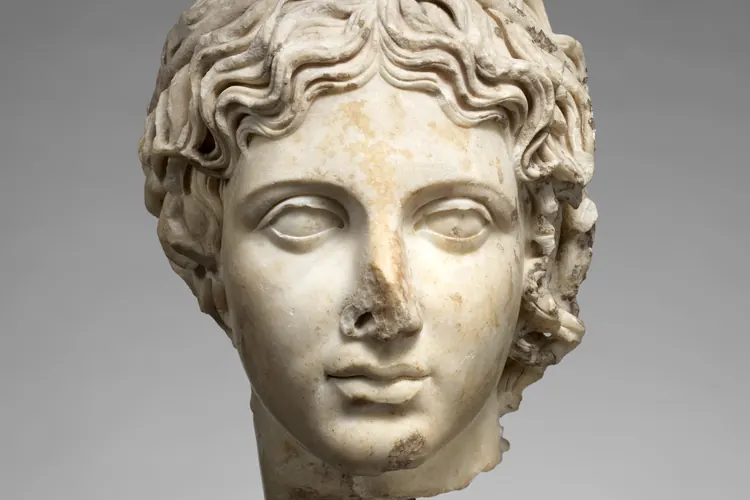

Фильтры против линейки: почему оценка по ретуши бесполезна
Фильтр увеличивает глаза, сужает челюсть и стирает поры, поэтому анализ такого снимка оценивает работу программы, а не лицо.

Сервисы, которые «оценивают лицо» по фотографии, обещают объективность: расстояния, углы, пропорции. Но линейка точна ровно настолько, насколько честен снимок. Если на фото поработал фильтр, программа измеряет не человека, а настройки камеры.
Что именно меняет фильтр
Бьюти-фильтры редко ограничиваются цветом и светом. Многие из них незаметно правят и геометрию лица, причём у всех пользователей в одну и ту же сторону:
- Глаза становятся крупнее и выглядят более открытыми.
- Нижняя челюсть и щёки сужаются.
- Нос становится уже, кончик слегка приподнимается.
- Кожа выравнивается, поры и мелкие тени исчезают.
По отдельности каждая правка почти не бросается в глаза. Вместе они меняют именно те соотношения, на которые опираются приложения для анализа внешности: пропорции ширины и высоты лица, расстояние между глазами, угол нижней челюсти. В итоге балл растёт, хотя лицо осталось прежним.
Это легко проверить. Если сравнить оценки одного и того же человека с фильтром и без него, разница покажет силу фильтра, а не изъяны внешности.
«Я много лет ретуширую портреты и до сих пор иногда не сразу замечаю, что клиент прислал кадр из бьюти-режима. Алгоритм, который видит один снимок, не заметит этого никогда.»
Ловушка сравнения
Вторая проблема психологическая. Человек ставит свою необработанную фотографию рядом с чужими снимками из ленты, где многое прошло через фильтр или ретушь. Сравнение заведомо нечестное: живая кожа с текстурой против гладкой картинки. Проигрыш в таком сравнении говорит не о внешности, а об обработке.
Ситуацию усложняет то, что бьюти-режим иногда включён по умолчанию. Во фронтальной камере некоторых смартфонов сглаживание кожи или «улучшение лица» работает сразу после покупки, и владелец может об этом не знать. Похожие настройки встречаются и в приложениях для видеосвязи.
Как сравнивать честно
Первый шаг: открыть настройки камеры и проверить, нет ли там пунктов вроде «бьюти», «ретушь», «смягчение кожи» или «коррекция лица». Их стоит выключить, особенно во фронтальной камере. Названия у производителей разные, поэтому лучше пройти по всему меню.
Второй шаг: сравнивать сопоставимое. Свой снимок без обработки имеет смысл ставить рядом только с другими снимками без обработки. Чужие фото из соцсетей для этого почти никогда не годятся: неизвестно, что с ними делали.
Третий шаг касается прогресса. Если вы следите за кожей, весом или осанкой, снимайте в одинаковых условиях: то же место, тот же свет, то же расстояние и та же камера. Фронтальная камера на расстоянии вытянутой руки визуально увеличивает нос и центр лица, а основная камера с пары метров искажает пропорции гораздо меньше.
Фильтр не враг, пока вы знаете, что он включён. Проблемы начинаются, когда отретушированное лицо принимают за точку отсчёта, а собственное отражение в зеркале начинают считать ошибкой.